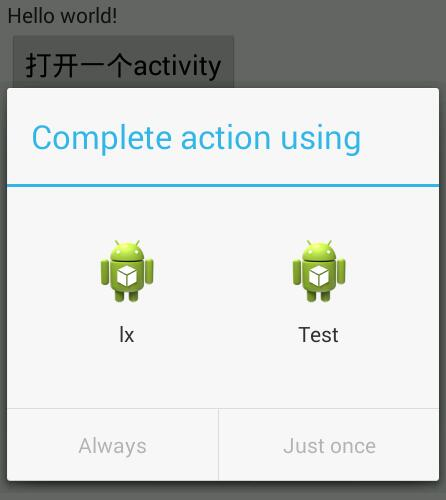

隐示Intent
这个东西是个好东西，主要是用来增加打开方式的，这个和Windows有点区别，windows打开方式的设定是写注册表项，而这个的话呢是来设置我们Activity的一个过滤器就可以达到这个效果，具体看下面操作：
设置AndroidManifest.xml
首先我们增加一个filter，具体看下面代码：
1 |
|
这个首先定义我们的action名称，这个可以自定义，有点类似于一个索引。category的值这里我们限制为这个默认的值，设置好之后，我们加一个按钮事件，通过这个Intent-filter打开这个Activity。
增加打开事件
1 | Intent intent = new Intent(); |
还是先new一个intent，然后设置一下Action的值，然后增加一个category（这里可以看到我们的category是add上去的，所以应该是可以添加多个），然后启动这个intent，这里的效果和我们普通的意图（intent）是一样的，那么我们用这个有什么好处呢？下面我们增加一个新的工程，然后在他的AndroidManifest.xml。
打开方式
我们将我们上面的intent-filter设置的内容复制到那个activity项目中，例如下面：
1 | <activity |
intent-filter多次设定应该是没啥事情，看来可以设置多个，然后部署到我们的安卓手机上，然后我们再次打开刚才的程序进行测试，你的程序将会看到入下的效果：

这个就是打开方式的一个设置，也是很简单的，我们随便打开一个，就会跳到那个activity上，具体怎么传送数据，我们之后再讨论。